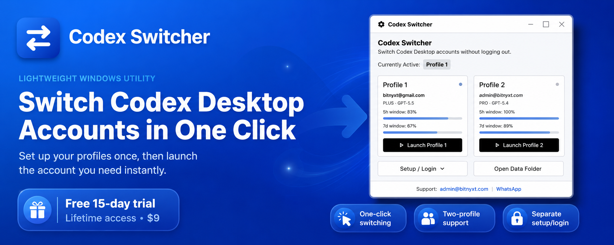
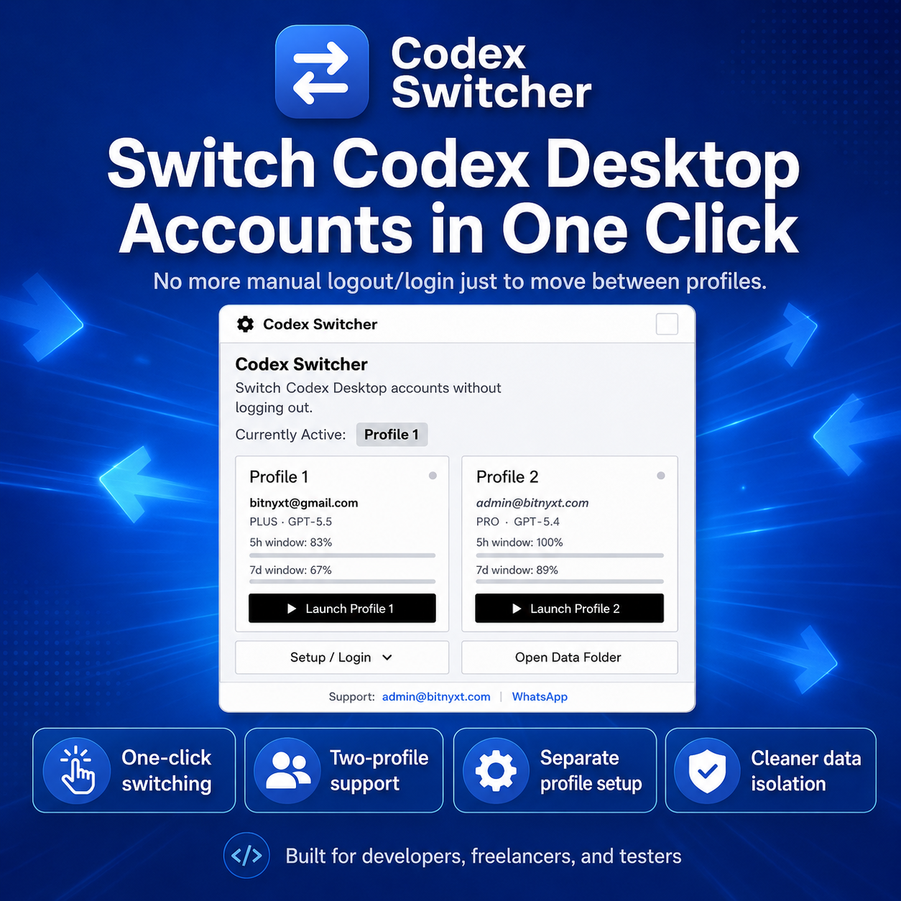

1C
One-click switching
Choose Profile 1 or Profile 2, let the app close Codex safely, swap the active profile data, and relaunch Codex Desktop.
- Fast profile launch
- Separate setup and re-login
- Basic account status display
Codex Switcher is a simple Windows utility for switching between two Codex Desktop profiles without repeated logout/login steps. Set up your profiles once, then launch the account you need instantly.

Codex Switcher stores each profile separately, lets you launch either profile with one click, and keeps account data isolated so switching is faster and cleaner.
The app is designed for Windows users who need a cleaner way to move between separate Codex Desktop accounts without repeating the full login process every time.
Choose Profile 1 or Profile 2, let the app close Codex safely, swap the active profile data, and relaunch Codex Desktop.
Keep Codex Switcher available from the Windows system tray so account switching stays close when you need it.
Start with a 15-day trial, then unlock lifetime access with a Polar license key after purchase.

Codex Switcher creates separate local profile folders for each Codex login. When the user chooses a profile, the app safely closes Codex, swaps the active authentication data, and launches Codex Desktop again with the selected profile.
Start with a free 15-day trial. After the trial, unlock lifetime access for a one-time payment of $9.
Use the trial first, then unlock the app with a Polar license key when you are ready for lifetime access.